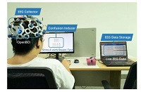
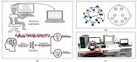
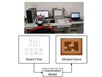
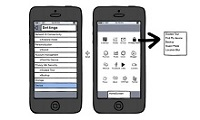
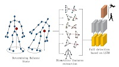
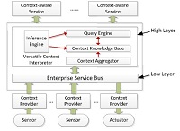

<!DOCTYPE html>
<html lang="en"> 
<head>
    <title>zyLab</title>
    
    <!-- Meta -->
    <meta charset="utf-8">
    <meta http-equiv="X-UA-Compatible" content="IE=edge">
    <meta name="viewport" content="width=device-width, initial-scale=1.0">
    <meta name="description" content="Responsive Resume Template">
    <meta name="author" content="Xiaoying Riley at 3rd Wave Media">    
    <link rel="shortcut icon" href="favicon.ico"> 
     
 
    <!-- Google Font -->
    <link href="https://fonts.googleapis.com/css?family=Roboto:300,400,500,700,900" rel="stylesheet">
    
    <!-- FontAwesome JS-->
    <script defer src="https://use.fontawesome.com/releases/v5.1.1/js/all.js" integrity="sha384-BtvRZcyfv4r0x/phJt9Y9HhnN5ur1Z+kZbKVgzVBAlQZX4jvAuImlIz+bG7TS00a" crossorigin="anonymous"></script>
       
    <!-- Theme CSS -->  
    <link id="theme-style" rel="stylesheet" href="assets/css/pillar-1.css">
	
  
    
</head> 

<body>	

        
	<article class="resume-wrapper text-center position-relative">
	    <div class="resume-wrapper-inner mx-auto text-left bg-white shadow-lg">
		    <header class="resume-header pt-4 pt-md-0">
			    <div class="media flex-column flex-md-row">
				    
				    <div class="media-body p-4 d-flex flex-column flex-md-row mx-auto mx-lg-0">
					    <div class="primary-info">
						    <h1 class="name mt-0 mb-1 text-white text-uppercase text-uppercase">周筠 </h1>
						    <div class="title mb-3">教授<br/>陕西师范大学 教育学院</div>
						    <ul class="list-unstyled">
							    <li class="mb-2"><a href="#"><i class="far fa-envelope fa-fw mr-2" data-fa-transform="grow-3"></i>chouyun526@gmail.com </a></li>
							    
						    </ul>
					    </div><!--//primary-info-->
					     <div class="secondary-info ml-md-auto mt-2">

						    <ul class="resume-social list-unstyled">
                                      <li class="title mb-3"></i></span><a href="about.html">English</a></i>  </li>
				      
                                                <li class="mb-3"></i></span></a></li>
                                                <li class="mb-3"></i></span></a></li>
                                                <li></i></span></a></li>
						    </ul>
					    </div><!--//secondary-info-->
					    
				    </div><!--//media-body-->
			    </div><!--//media-->
		            </header>
		            <div class="resume-body p-5">
				      <div class="row">
				    <div class="col-lg-9">
			    <section class="resume-section summary-section mb-5">
				    <h2 class="resume-section-title text-uppercase font-weight-bold pb-3 mb-3">个人简介</h2>
				    <div class="resume-section-content">
					    <p>博士，教授，硕士生导师，现为陕西师范大学教育学院教育技术系教师。获法国中央理工计算机科学博士学位，目前从事智能交互、脑机交互及虚拟现实在教育中的应用等研究，著有专著1部，已有30余篇成果发表在领域内有影响力的国际会议及SCI期刊上，多篇SCI期刊审稿人，人工智能学会CAAI智能交互专委会委员，主持国家自然科学基金2项、陕西省自然科学基金1项等，参与多个项目。</p>
				    <br/>
				    </div><!--//resume-timeline-item-desc-->
			    
			  
					    <section class="resume-section experience-section mb-5">
						    <h2 class="resume-section-title text-uppercase font-weight-bold pb-3 mb-3">教育经历</h2>
						    <div class="resume-section-content">
							<div class="position-relative">
								    <article class="resume-item position-relative pb-5">

												    <div class="d-flex flex-column flex-md-row">				    									    <div class="resume-timeline-item-header mb-2">
										
										        <h3 class="resume-position-title font-weight-bold mb-1"></h3>
										        <div class="resume-company-name ml-auto"></div>
										    </div><!--//row-->
										    <div class="resume-position-time"></div>
									    </div><!--//resume-timeline-item-header-->
									    <div class="resume-timeline-item-desc">
										     <p>北京师范大学 获双学位学士（主修教育技术学，辅修英语）</p>
								                     <p>北京交通大学 获教育技术学理学硕士 </p>
								                     <p>法国里昂中央理工学校 获计算机科学博士学位</p>
										    <br/>
										    
			  </div><!--//resume-timeline-item-desc-->
			
			     
			 
			    
			  
					   
									    
									      <h2 class="resume-section-title text-uppercase font-weight-bold pb-3 mb-3">课程</h2>
									    
									
									    <div class="resume-timeline-item-desc">
										    
									   <p>Python程序语言设计</p>
								    <p>人机交互与在线学习设计原则</p>
								    <p>教育数据挖掘 </p>
								    <p>数据分析与机器学习</p>
								    <p>虚拟现实教学资源建设与应用</p>
								    <p>教育软件与大数据</p>	    
										      <br/>
							    </div><!--//resume-timeline-item-desc-->
									    <h2 class="resume-section-title text-uppercase font-weight-bold pb-3 mb-3">研究领域</h2>
									    
									
									    <div class="resume-timeline-item-desc">
										    
									   <p>教育技术 人机交互</p>
								    <p>主要研究方向：虚拟现实、3D学习资源、智能交互在教育中应用研究、认知情绪识别与教育脑机接口研究、人工智能技术精准帮扶农村教师的难点与解决路径研究</p>
								      <br/>
							    </div><!--//resume-timeline-item-desc-->
									      <h2 class="resume-section-title text-uppercase font-weight-bold pb-3 mb-3">学术兼职</h2>
									    
									
									    <div class="resume-timeline-item-desc">
										    
									
								    <p>人工智能学会CAAI智能交互专委会委员</p>
								      <br/>
							    </div><!--//resume-timeline-item-desc-->
									   
					 
										    <h2 class="resume-section-title text-uppercase font-weight-bold pb-3 mb-3">科研项目</h2>
									      <div class="resume-timeline-item-desc">
									     <div class="resume-position-time">主持</div>
										    <p>1. 国家自然科学基金面上项目，智能教学系统中基于脑机接口的困惑情绪识别与双向调节策略研究</p>
										    <p>2. 国家自然科学基金青年项目，在线学习自适应交互中认知负荷与学习情绪的脑电表征及认知状态的评估与调整</p>
										    <p>3. 陕西省自然科学基金，在线学习中基于计算机视觉的注意力识别与智能交互研究</p>
										    <p>4. 陕西师范大学中央高校基本科研基金，基于眼动和表情识别的MOOCs视频视觉注意力机制研究</p>
									     <div class="resume-position-time">参与</div>
										    <p>1. 科技部国家重点研发计划“社会治理与智慧社会科技支撑(平安中国)”专项，农村地区教师教学能力智能评测与教学精准辅助技术研究</p>  
										    <p>2. 横向，基于EEG的人脑焦虑、抑郁情绪量化评价方法参与</p>
										    <p>3. 陕西省自然科学基金，基于多分辨率特征的无线传感器网络能量最优化模型及求解算法研究</p>
								                    <p>4. 横向，基于家居智能看护机器人的老人反常行为感知关键技术研究</p>
										    <p>5. 横向，教师教育信息化能力研修平台资源建设及应用</p>
										    <p>6. 参与法国“eGonomy”项⽬，为法国9个知名企业、研究所及博物馆合作项目，包括法国国家博物馆联合会(RMN)，该项目旨在通过用户行为分析来为大型图片数据库交互提供多模、自然、智能的交互。主要负责与实施用户活动追踪分析与探索模块。</p>
										    <p>7. 参与德国电信与美国Mozilla基金会关于Firefox OS的合作项目，该项目旨在打造安全友好的Firefox智能手机系统。主要负责与实施监测与用户评估模块。</p>
										      <br/>
									    </div><!--//resume-timeline-item-desc-->
									
						  <h2 class="resume-section-title text-uppercase font-weight-bold pb-3 mb-3">主要论文列表</h2>
									      <div class="resume-timeline-item-desc">
									     <div class="resume-position-time">专著</div>
									 
										    <p>基于上下文的智能感知交互模式与系统<br/>周筠 徐韬<br/>2015.11陕西师范大学出版社</p>
										    <div class="resume-position-time">期刊 </div>
										      
										      <div class="row g-0 publication">
										      <div class="col-sm-4 g-0">
										      <div class="row">
											      <div class="col-10 pub1col">
										      </div></div>
										      </div>
										      <div class="col-sm-8 p-1 pub2col"> 
										       <p> Xu,T., Wang,J., Zhang,G., Zhang,L., Zhou,Y. 
											  <em>Confused or not: decoding brain activity and recognizing confusion in reasoning learning using EEG.</em>Journal of Neural Engineering,20(2),2023<br>
					                                                      <details>
												      <summary><em>(Abstract)</em>
													      <a href="assets/documents/28.pdf" target="_blank">
                                                                                                          <i class="fas fa-file-pdf"></i>
                                                                                                         </a> 
													 <span class="venue-tags">
                                                                                                  <label class="venue-tag"></label>
                                                                                                     </span>
												      </summary>
											      Objective. Confusion is the primary epistemic emotion in the learning process, influencing
students’ engagement and whether they become frustrated or bored. However, research on
confusion in learning is still in its early stages, and there is a need to better understand how to
recognize it and what electroencephalography (EEG) signals indicate its occurrence. The present
work investigates confusion during reasoning learning using EEG, and aims to fill this gap with a
multidisciplinary approach combining educational psychology, neuroscience and computer
science. Approach. First, we design an experiment to actively and accurately induce confusion in
reasoning. Second, we propose a subjective and objective joint labeling technique to address the
label noise issue. Third, to confirm that the confused state can be distinguished from the
non-confused state, we compare and analyze the mean band power of confused and unconfused
states across five typical bands. Finally, we present an EEG database for confusion analysis, together
with benchmark results from conventional (Naive Bayes, Support Vector Machine, Random Forest,
and Artificial Neural Network) and end-to-end (Long Short Term Memory, Residual Network, and
EEGNet) machine learning methods. Main results. Findings revealed: 1. Significant differences in
the power of delta, theta, alpha, beta and lower gamma between confused and non-confused
conditions; 2. A higher attentional and cognitive load when participants were confused; and 3.
The Random Forest algorithm with time-domain features achieved a high accuracy/F1 score
(88.06%/0.88 for the subject-dependent approach and 84.43%/0.84 for the subject-independent
approach) in the binary classification of the confused and non-confused states. Significance. The
study advances our understanding of confusion and provides practical insights for recognizing and
analyzing it in the learning process. It extends existing theories on the differences between confused
and non-confused states during learning and contributes to the cognitive-affective model. The
research enables researchers, educators, and practitioners to monitor confusion, develop adaptive
systems, and test recognition approaches.
											      </details>
										          </p>
										        </div>
										       </div>
										      
										      
										      <div class="row g-0 publication">
										      <div class="col-sm-4 g-0">
										      <div class="row">
											      <div class="col-10 pub1col">
										      </div></div>
										      </div>
										      <div class="col-sm-8 p-1 pub2col"> 
										       <p> Xu,T., Dang,W., Wang,J.,Zhou,Y.
											  <em>DAGAM: a domain adversarial graph attention model for subject-independent EEG-based emotion recognition.</em>Journal of Neural Engineering,20(1),2023<br>
					                                                      <details>
												      <summary><em>(Abstract)</em>
													      <a href="assets/documents/29.pdf" target="_blank">
                                                                                                          <i class="fas fa-file-pdf"></i>
                                                                                                         </a> 
													 <span class="venue-tags">
                                                                                                  <label class="venue-tag"></label>
                                                                                                     </span>
												      </summary>
											      Objective. Due to individual differences in electroencephalogram (EEG) signals, the learning model
built by the subject-dependent technique from one person’s data would be inaccurate when applied
to another person for emotion recognition. Thus, the subject-dependent approach for emotion
recognition may result in poor generalization performance when compared to the
subject-independent approach. However, existing studies have attempted but have not fully utilized
EEG’s topology, nor have they solved the problem caused by the difference in data distribution
between the source and target domains. Approach. To eliminate individual differences in EEG
signals, this paper proposes the domain adversarial graph attention model, a novel EEG-based
emotion recognition model. The basic idea is to generate a graph using biological topology to
model multichannel EEG signals. Graph theory can topologically describe and analyze EEG
channel relationships and mutual dependencies. Then, unlike other graph convolutional networks,
self-attention pooling is used to benefit from the extraction of salient EEG features from the graph,
effectively improving performance. Finally, following graph pooling, the domain adversarial model
based on the graph is used to identify and handle EEG variation across subjects, achieving good
generalizability efficiently. Main Results. We conduct extensive evaluations on two benchmark data
sets (SEED and SEED IV) and obtain cutting-edge results in subject-independent emotion
recognition. Our model boosts the SEED accuracy to 92.59% (4.06% improvement) with the
lowest standard deviation (STD) of 3.21% (2.46% decrements) and SEED IV accuracy to 80.74%
(6.90% improvement) with the lowest STD of 4.14% (3.88% decrements), respectively. The
computational complexity is drastically reduced in comparison to similar efforts (33 times lower).
Significance. We have developed a model that significantly reduces the computation time while
maintaining accuracy, making EEG-based emotion decoding more practical and generalizable.

											      </details>
										          </p>
										        </div>
										       </div>
										      
										      <div class="row g-0 publication">
										      <div class="col-sm-4 g-0">
										      <div class="row">
											      <div class="col-10 pub1col">
										      </div></div>
										      </div>
										      <div class="col-sm-8 p-1 pub2col"> 
										       <p>Zhou, Y., Xu, T., Yang, H., Li, S.
											  <em>Improving Spatial Visualization and Mental Rotation Using FORSpatial Through Shapes and Letters in Virtual Environment.</em>IEEE Transactions on Learning Technologies, 2022<br>
					                                                      <details>
												      <summary><em>(Abstract)</em>
													      <a href="assets/documents/22.pdf" target="_blank">
                                                                                                          <i class="fas fa-file-pdf"></i>
                                                                                                         </a> 
													 <span class="venue-tags">
                                                                                                  <label class="venue-tag">TLT</label>
                                                                                                     </span>
												      </summary>
											      Existing research on spatial ability recognizes the critical role played by spatial visualization and mental rotation. Recent evidence suggests that external visualization and manipulation can boost spatial thinking. 
										The virtual environment provides an exciting opportunity so that many spatial ability training tasks based on reading printed illustrations can be migrated to a highly 3-D interactive and visualized environment. However, few studies have employed virtual reality (VR)
                                                                                technology to improve spatial visualization and mental rotation. In addition, the design of training contents and corresponding VR applications are still lacking. In this work, we propose FORSpatial, a system mainly for spatial ability training in a virtual environment. First, in this article, we design a novel scheme and principles for generating tasks, involving spatial visualization
and mental rotation through flexible combinations of shapes and letters. Based on this, we create testing questions and a FORSpatial training application in desktop VR. FORSpatial and its components are made publicly available and free to use. To evaluate the performance of spatial training, verify the usability of the FORSpatial application, and analyze learning behavior, we organized a user study with 49 .participants, including an experimental group and a control group. The comparison between experimental and control groups shows the significant improvement of spatial skills through training. The analysis of interaction logging data and subjective comments reveals how FORSpatial supports spatial thinking.   
											      </details>
										          </p>
										        </div>
										       </div>
										      
										      <div class="row g-0 publication">
										      <div class="col-sm-4 g-0">
										      <div class="row">
											      <div class="col-10 pub1col">
										      </div></div>
										      </div>
										      <div class="col-sm-8 p-1 pub2col"> 
										       <p>Pi, Z., Deng, L., Wang, X., Guo, P., Xu, T., Zhou, Y.
											  <em>The influences of a virtual instructor's voice and appearance on learning from video lectures.</em>Journal of Computer Assisted Learning, 2022<br>
					                                                      <details>
												      <summary><em>(Abstract)</em>
													      <a href="assets/documents/15.pdf" target="_blank">
                                                                                                          <i class="fas fa-file-pdf"></i>
                                                                                                         </a> 
													 <span class="venue-tags">
                                                                                                  <label class="venue-tag"></label>
                                                                                                     </span>
												      </summary>
											      Background: Video lectures which include the instructor's presence are becoming
                                                                                               increasingly popular. Presenting a real human does, however, entail higher financial
                                                                                             and time costs in making videos, and one innovative approach to reduce costs has
                                                                                            been to generate a virtual speaking instructor.
                                                                                           Objectives: The current study examined whether the use of a virtual instructor in
                                                                                          video lectures would facilitate learning as well as a human instructor, and whether
                                                                                            manipulating the virtual instructor's characteristics (i.e., voice and appearance) might
                                                                                           optimize the effectiveness of the virtual instructor.
                                                                                      Methods: Our study set four conditions. In the control condition, students watched a
                                                                                      human instructor. In the experiment conditions, students watched one of (a) a virtual
                                                                                       instructor which used the human instructor's voice and an AI image, (b) a virtual
                                                                                       instructor which spoke in an AI voice with an AI image made to speak using text-to-speech and lip synthesis techniques, or (c) a virtual instructor with used an AI voice
                                                                                        and an AI likable-image of an instructor.
                                                                                        Results and Conclusions: The AI likable instructor condition had a significant positive
                                                                                    effect on students' learning performance and motivation, without decreasing the
                                                                                   attention students paid to the learning materials.
                                                                                    Implications: Our findings suggest that instructional video designers can make use of
                                                                                 AI voices and AI images of likable humans as instructors to motivate students and
                                                                               enhance their learning performance.
											      </details>
										          </p>
										        </div>
										       </div>
										      
										      <div class="row g-0 publication">
										      <div class="col-sm-4 g-0">
										      <div class="row">
											      <div class="col-10 pub1col">
										      </div></div>
										      </div>
										      <div class="col-sm-8 p-1 pub2col"> 
										       <p>Xu, T., Zhou, Y., Hou, Z., Zhang, W.
											  <em>Decode Brain System: A Dynamic Adaptive Convolutional Quorum Voting Approach for Variable-Length EEG Data.</em>Complexity, 2020:1-9, 2020<br>
					                                                      <details>
												      <summary><em>(Abstract)</em>
													      <a href="assets/documents/14.pdf" target="_blank">
                                                                                                          <i class="fas fa-file-pdf"></i>
                                                                                                         </a> 
													 <span class="venue-tags">
                                                                                                  <label class="venue-tag"></label>
                                                                                                     </span>
												      </summary>
											    The brain is a complex and dynamic system, consisting of interacting sets and the temporal evolution of these sets. Electroencephalogram (EEG) recordings of brain activity play a vital role to decode the cognitive process of human beings in learning
research and application areas. In the real world, people react to stimuli differently, and the duration of brain activities varies
between individuals. ,erefore, the length of EEG recordings in trials gathered in the experiment is variable. However, current
approaches either fix the length of EEG recordings in each trial which would lose information hidden in the data or use the sliding
window which would consume large computation on overlapped parts of slices. In this paper, we propose TOO (Traverse Only
Once), a new approach for processing variable-length EEG trial data. TOO is a convolutional quorum voting approach that breaks
the fixed structure of the model through convolutional implementation of sliding windows and the replacement of the fully
connected layer by the 1 × 1 convolutional layer. Each output cell generated from 1 × 1 convolutional layer corresponds to each
slice created by a sliding time window, which reflects changes in cognitive states. ,en, TOO employs quorum voting on output
cells and determines the cognitive state representing the entire single trial. Our approach provides an adaptive model for trials of
different lengths with traversing EEG data of each trial only once to recognize cognitive states. We design and implement a
cognitive experiment and obtain EEG data. Using the data collecting from this experiment, we conducted an evaluation to
compare TOO with a state-of-art sliding window end-to-end approach. ,e results show that TOO yields a good accuracy
(83.58%) at the trial level with a much lower computation (11.16%). It also has the potential to be used in variable signal processing
in other application areas.
											      </details>
										          </p>
										        </div>
										       </div>
										     
										      <div class="row g-0 publication">
										      <div class="col-sm-4 g-0">
										      <div class="row">
											      <div class="col-10 pub1col">
										      </div></div>
										      </div>
										      <div class="col-sm-8 p-1 pub2col"> 
										       <p>Zhou, Y., Xu, T., Li, S., Shi R.
											  <em>Beyond Engagement: an EEG-based Methodology for Assessing User's Confusion in Educational Game.</em>Universal Access in the Information Society, accepted, 2019<br>
					                                                      <details>
												      <summary><em>(Abstract)</em>
													      <a href="assets/documents/13.pdf" target="_blank">
                                                                                                          <i class="fas fa-file-pdf"></i>
                                                                                                         </a> 
													 <span class="venue-tags">
                                                                                                  <label class="venue-tag"></label>
                                                                                                     </span>
												      </summary>
											    Confusion is an emotion, which may occur when the learner is confronting inconsistence between new knowledge and existing cognitive structure, or reasoning for solving the puzzle and problem. Although confusion is not pleasant, it is necessary 
for the learner to engage in understanding and deep learning. Consequently, confusion assessment has attracted increased 
interest in e-learning. However, current studies have targeted no further than engagement detection and measurement, while 
there is lack of studies in investigating cognitive and emotional aspects beyond engagement in the context of game-based 
learning. To quantify confused states in logic reasoning in game-based learning, we propose an EEG-based methodology 
for assessing the user’s confusion using the OpenBCI device with 8 channels. In the complicated context of game play, it is 
difcult, and sometimes impossible, to collect the ground truth of the data in real tasks. To solve this issue, this work leverages cross-task and cross-subject methods to build a classifer, that is, training on the data of one standardized cognitive test 
paradigm (Raven’s test) and testing on the data of real tasks in game play (Sokoban Game). It provides a new possibility 
to create a classifer based on a small dataset. We also employ the end-to-end algorithm of deep learning in machine learning. Results showed the feasibility of this proposal in the task variation of the classifer, with an accuracy of 91.04%. The 
proposed EEG-based methodology is suitable to analyze learners’ confusion on the long game-play duration and has a good 
adaption in real tasks.
											      </details>
										          </p>
										        </div>
										       </div>
										      
										      <div class="row g-0 publication">
										      <div class="col-sm-4 g-0">
										      <div class="row">
											      <div class="col-10 pub1col">
										      </div></div>
										      </div>
										      <div class="col-sm-8 p-1 pub2col"> 
										       <p>Zhou, Y., Qi L., Raake A., Xu T.,Piekarska M., Zhang X.
											  <em>User Attitudes and Behaviors towards Personalized Control of Privacy Settings on Smartphones.</em> Concurrency and Computation Practice and Experience, online, 2018<br>
					                                                      <details>
												      <summary><em>(Abstract)</em>
													      <a href="assets/documents/01.pdf" target="_blank">
                                                                                                          <i class="fas fa-file-pdf"></i>
                                                                                                         </a> 
													 <span class="venue-tags">
                                                                                                  <label class="venue-tag"></label>
                                                                                                     </span>
												      </summary>
											    The fine-grained access control has been proved to be a reliable tool to ensure preserving of privacy of end users. In fog computing, one of the challenges is to understand users' attitudes and
behaviors toward personalized control. However, few of studies have given a clear view on users'
perception of the burden of interactivity when they set complex privacy settings. To this end, we
conducted a user study including a lab study with 26 participants and an evaluation with 223
participants. From the lab study, we found that participants were satisfied with improved privacy settings but did not adapt well to complex personalized interfaces. We proposed effective
methods to assist users to balance between the full control and the additional interaction burden,
including sorting, recommendations, and establishing profiles. After this lab study, we organized
a survey evaluation additionally to explore users' current usage of privacy features. Results from
the evaluation showed that the principle reason that users failed to use privacy features was
that they were not appropriately aware of these features. A key conclusion is that privacy settings should not only let users take over the control of smartphones but also inform them of the
knowledge on privacy practices.
											      </details>
										          </p>
										        </div>
										       </div>
										      
										      <div class="row g-0 publication">
										      <div class="col-sm-4 g-0">
										      <div class="row">
											      <div class="col-10 pub1col">
										      </div></div>
										      </div>
										      <div class="col-sm-8 p-1 pub2col"> 
										       <p>Zhou, Y., Xu, T., David, B., Chalon, R.
											  <em>Interaction on-the-go: a fine-grained exploration on wearable PROCAM interfaces and gestures in mobile situations.</em>Universal Access in the Information Society,15(2):1-15, 2015<br>
					                                                      <details>
												      <summary><em>(Abstract)</em>
													      <a href="assets/documents/02.pdf" target="_blank">
                                                                                                          <i class="fas fa-file-pdf"></i>
                                                                                                         </a> 
													 <span class="venue-tags">
                                                                                                  <label class="venue-tag"></label>
                                                                                                     </span>
												      </summary>
											    Wearable projector and camera (PROCAM)
interfaces, which provide a natural, intuitive and spatial
experience, have been studied for many years. However,
existing hand input research into such systems revolved
around investigations into stable settings such as sitting or
standing, not fully satisfying interaction requirements in
sophisticated real life, especially when people are moving.
Besides, increasingly more mobile phone users use their
phones while walking. As a mobile computing device, the
wearable PROCAM system should allow for the fact that
mobility could influence usability and user experience.
This paper proposes a wearable PROCAM system, with
which the user can interact by inputting with finger gestures like the hover gesture and the pinch gesture on projected surfaces. A lab-based evaluation was organized,
which mainly compared two gestures (the pinch gesture
and the hover gesture) in three situations (sitting, standing
and walking) to find out: (1) How and to what degree does
mobility influence different gesture inputs? Are there any
significant differences between gesture inputs in different
settings? (2) What reasons cause these differences? (3)
What do people think about the configuration in such
systems and to what extent does the manual focus impact
such interactions? From qualitative and quantitative points
of view, the main findings imply that mobility impacts
gesture interactions in varying degrees. The pinch gesture
undergoes less influence than the hover gesture in mobile
settings. Both gestures were impacted more in walking
state than in sitting and standing states by all four negative
factors (lack of coordination, jittering hand effect, tired
forearms and extra attention paid). Manual focus influenced mobile projection interaction. Based on the findings,
implications are discussed for the design of a mobile projection interface with gestures.
											      </details>
										          </p>
										        </div>
										       </div>
										      
										       <div class="row g-0 publication">
										      <div class="col-sm-4 g-0">
										      <div class="row">
											      <div class="col-10 pub1col">
										      </div></div>
										      </div>
										      <div class="col-sm-8 p-1 pub2col"> 
										       <p>Zhou, Y., Xu, T., David, B., Chalon, R.
											  <em>Innovative Wearable Interfaces: An Exploratory Analysis of Paper-based Interfaces with Camera-glasses Device Unit.</em>Journal of Personal and Ubiquitous Computing, 18(4):835-849, 2013<br>
					                                                      <details>
												      <summary><em>(Abstract)</em>
													      <a href="assets/documents/03.pdf" target="_blank">
                                                                                                          <i class="fas fa-file-pdf"></i>
                                                                                                         </a> 
													 <span class="venue-tags">
                                                                                                  <label class="venue-tag"></label>
                                                                                                     </span>
												      </summary>
											    The new ubiquitous interaction methods change
people’s life and facilitate their tasks in everyday life and in
the workplace, enabling people to access their personal data as
well as public resources at any time and in any place. We
found two solutions to enable ubiquitous interaction and put a
stop to the limits imposed by the desktop mode: namely
nomadism and mobility. Based on these two solutions, we
have proposed three interfaces (Zhou et al. in HCI international 2011: human–computer interaction. Interaction techniques and environments, Springer, Berlin, pp 500–509,
2011): in-environment interface (IEI), environment dependent interface (EDI), and environment independent interface
(EII). In this paper, we first discuss an overview of IEI, EDI,
and EII, before excluding IEI and focusing on EDI and EII,
their background, and distinct characteristics. We also propose a continuum from physical paper-based interface to
digital projected interface in relation with EDI and EII. Then,
to validate EDI and EII concepts, we design and implement a
MobilePaperAccess system, which is a wearable cameraglasses system with paper-based interface and original input
techniques allowing mobile interaction. Furthermore, we
discuss the evaluation of the MobilePaperAccess system; we
compare two interfaces (EDI and EII) and three input techniques (finger input, mask input, and page input) to test the
feasibility and usability of this system. Both the quantitative
and qualitative results are reported and discussed. Finally, we
provide the prospects and our future work for improving the
current approaches.
											      </details>
										          </p>
										        </div>
										       </div>
										      
										      <div class="row g-0 publication">
										      <div class="col-sm-4 g-0">
										      <div class="row">
											      <div class="col-10 pub1col">
										      </div></div>
										      </div>
										      <div class="col-sm-8 p-1 pub2col"> 
										       <p>Xu, T. Zhou, Y., Zhu, J
											  <em>New Advances and Challenges of Fall Detection Systems: A Survey.</em>Applied Science, 8(3) 2018<br>
					                                                      <details>
												      <summary><em>(Abstract)</em>
													      <a href="assets/documents/04.pdf" target="_blank">
                                                                                                          <i class="fas fa-file-pdf"></i>
                                                                                                         </a> 
													 <span class="venue-tags">
                                                                                                  <label class="venue-tag"></label>
                                                                                                     </span>
												      </summary>
											  Falling, as one of the main harm threats to the elderly, has drawn researchers’ attentions
and has always been one of the most valuable research topics in the daily health-care for the elderly
in last two decades. Before 2014, several researchers reviewed the development of fall detection,
presented issues and challenges, and navigated the direction for the study in the future. With smart
sensors and Internet of Things (IoT) developing rapidly, this field has made great progress. However,
there is a lack of a review and discussion on novel sensors, technologies and algorithms introduced
and employed from 2014, as well as the emerging challenges and new issues. To bridge this gap,
we present an overview of fall detection research and discuss the core research questions on this
topic. A total of 6830 related documents were collected and analyzed based on the key words.
Among these documents, the twenty most influential and highly cited articles are selected and
discussed profoundly from three perspectives: sensors, algorithms and performance. The findings
would assist researchers in understanding current developments and barriers in the systems of
fall detection. Although researchers achieve fruitful work and progress, this research domain still
confronts challenges on theories and practice. In the near future, the new solutions based on advanced
IoT will sustainably urge the development to prevent falling injuries.
											      </details>
										          </p>
										        </div>
										       </div>
						    
										    
										    <div class="row g-0 publication">
										      <div class="col-sm-4 g-0">
										      <div class="row">
											      <div class="col-10 pub1col">
										      </div></div>
										      </div>
										      <div class="col-sm-8 p-1 pub2col"> 
										       <p>Xu, T. Zhou, Y.
											  <em>Elders’ fall detection based on biomechanical features using depth camera.</em>International Journal of Wavelets, Multiresolution and Information Processing, 16(2) 2018<br>
					                                                      <details>
												      <summary><em>(Abstract)</em>
													      <a href="assets/documents/26.pdf" target="_blank">
                                                                                                          <i class="fas fa-file-pdf"></i>
                                                                                                         </a> 
													 <span class="venue-tags">
                                                                                                  <label class="venue-tag"></label>
                                                                                                     </span>
												      </summary>
											  An accidental fall poses a serious threat to the health of the elderly. With the advances
of technology, an increased number of surveillance systems have been installed in the
elderly home to help medical staffs find the elderly at risk. Based on the study of human
biomechanical equilibrium, we proposed a fall detection method based on 3D skeleton
data obtained from the Microsoft Kinect. This method leverages the accelerated velocity
of Center of Mass (COM) of different body segments and the skeleton data as main
biomechanical features, and adopts Long Short-Term Memory networks (LSTM) for fall
detection. Compared with other fall detection methods, it does not require older people
to wear any other sensors and can protect the privacy of the elderly. According to the
experiment to validate our method using the existing database, we found that it could
efficiently detect the fall behaviors. Our method provides a feasible solution for the fall
detection that can be applied at homes of the elderly.
											      </details>
										          </p>
										        </div>
										       </div>
										   
										    
										   <div class="row g-0 publication">
										      <div class="col-sm-4 g-0">
										      <div class="row">
											      <div class="col-10 pub1col">
										      </div></div>
										      </div>
										      <div class="col-sm-8 p-1 pub2col"> 
										       <p>Xu, T. Zhou, Y.
											  <em>Fall prediction based on biomechanics equilibrium using Kinect.</em>International Journal of Distributed Sensor Networks, 13(4) 2017<br>
					                                                      <details>
												      <summary><em>(Abstract)</em>
													      <a href="assets/documents/05.pdf" target="_blank">
                                                                                                          <i class="fas fa-file-pdf"></i>
                                                                                                         </a> 
													 <span class="venue-tags">
                                                                                                  <label class="venue-tag"></label>
                                                                                                     </span>
												      </summary>
											 The fall is one of the most important research fields of solitary elder healthcare at home based on Internet of Things
technology. Current studies mainly focus on the fall detection, which helps medical staffs bring a fallen elder out of danger in time. However, it neither predicts a fall nor provides an effective protection against a fall. This article studies the
fall prediction based on human biomechanics equilibrium and body posture characteristics through analyzing three-dimensional skeleton joints data from the depth camera sensor Kinect. The research includes building a human bionic
mass model using skeleton joints data from Kinect, determining human balance state, and proposing a fall prediction
algorithm based on recurrent neural networks by unbalanced posture features. We evaluate the model and algorithm on
an open database. The performance indicates that the fall prediction algorithm by studying human biomechanics can predict a fall (91.7%) and provide a certain amount of time (333 ms) before the elder injuring (hitting the floor). This work
provides a technical basis and a data analytics approach for the fall protection.
											      </details>
										          </p>
										        </div>
										       </div>
								                    
										    <div class="row g-0 publication">
										      <div class="col-sm-4 g-0">
										      <div class="row">
											      <div class="col-10 pub1col">
										      </div></div>
										      </div>
										      <div class="col-sm-8 p-1 pub2col"> 
										       <p>Xu, T. Zhou, Y., David, B., Chalon, R.
											  <em>A smart brain: an intelligent context inference engine for context-aware middleware.</em>International Journal of Sensor Networks, 22(3):145-157, 2016<br>
					                                                      <details>
												      <summary><em>(Abstract)</em>
													      <a href="assets/documents/27.pdf" target="_blank">
                                                                                                          <i class="fas fa-file-pdf"></i>
                                                                                                         </a> 
													 <span class="venue-tags">
                                                                                                  <label class="venue-tag"></label>
                                                                                                     </span>
												      </summary>
											 Recently, ‘activity’ context draws increased attention from researchers in context 
awareness. Existing context-aware middleware usually employ the rule-based method to, which 
is easy to build and also intuitive to work with. However, this method is fragile, not flexible 
enough, and is inadequate to support diverse types of tasks. In this paper, we surveyed the related 
literature in premier conferences over the past decade, reviewed the main activity context 
recognition methods, and summarised their three main facets: basic activity inference, dynamic 
activity analysis, and future activity recommendation. Based on our previous work, we then 
proposed an intelligent inference engine for our context-aware middleware. Besides satisfying 
requirements for checking context consistency, our inference engine integrates the three methods 
for activity context recognition to provide a solution for all facets of activity context recognition 
based on our context-aware middleware.
											      </details>
										          </p>
										        </div>
										       </div>
										    
										    
                                                                                    										     									      
                                                                                    <div class="resume-position-time">会议 </div>
										      
										    
										    <p>My English Teachers Are Not Human but I Like Them: Research on Virtual Teacher Self-study Learning System in K12 <a href="assets/documents/21.pdf" download>(PDF)</a><br/>Deng, L., Zhou, Y., Cheng, T., Liu, X., Xu, T., Wang, X.<br/>International Conference on Human-Computer Interaction (HCII 2022), Springer, Cham, 176-187, 2022</p>
										    <p>Technical Supports and Emotional Design in Digital Picture Books for Children: A Review <a href="assets/documents/20.pdf" download>(PDF)</a><br/>Bai, J., Zhang, H., Chen, Q., Cheng, X., Zhou, Y.<br/>The 13th International Conference on Ambient Systems, Networks and Technologies (ANT 2022), 201: 174-180, 2022</p>
										    <p>EyeBox: A Toolbox based on Python3 for Eye Movement Analysis <a href="assets/documents/19.pdf" download>(PDF)</a><br/>Zhang, L., Liu, X., Chen, Q., Zhou, Y., Xu, T.<br/>The 13th International Conference on Ambient Systems, Networks and Technologies (ANT 2022), 201: 166-173, 2022</p>
										    <p>Exploring Persona Characteristics in Learning: A Review Study of Pedagogical Agents <a href="assets/documents/18.pdf" download>(PDF)</a><br/>Tao, Y., Zhang, G., Zhang, D., Wang, F., Zhou, Y., Xu, T.<br/>The 13th International Conference on Ambient Systems, Networks and Technologies (ANT 2022), 201: 87-94, 2022</p>
										    <p>Visualized Cues for Enhancing Spatial Ability Training in Virtual Reality <a href="assets/documents/PPT2.pdf" download>(PPT)</a><a href="assets/documents/17.pdf" download>(PDF)</a><br/>Chen, Q., Deng, L., Xu, T., Zhou, Y.<br/>2022 IEEE Conference on Virtual Reality and 3D User Interfaces Abstracts and Workshops (VRW), IEEE, 299-300, 2022</p>
										    <p>Improving Language Learning by an Interact-to-Learn Desktop VR Application: A Case Study with Peinture <a href="assets/documents/PPT1.pdf" download>(PPT)</a><a href="assets/documents/16.pdf" download>(PDF)</a><br/>Liu, X., Zhang, S., Xu, T., Zhou, Y.<br/>2022 IEEE Conference on Virtual Reality and 3D User Interfaces Abstracts and Workshops (VRW), IEEE, 267-270, 2022</p>
										    <p>A Semi-automatic Feature Fusion Model for EEG-based Emotion Recognition <a href="assets/documents/24.pdf" download>(PDF)</a><br/>Zhang, G., Li, S., Wang, J., Zhou, Y., Xu, T.<br/>2021 27th International Conference on Mechatronics and Machine Vision in Practice (M2VIP), 726-731, 2021</p>
										    <p>From Textbook to Teacher: an Adaptive Intelligent Tutoring System Based on BCI <a href="assets/documents/23.pdf" download>(PDF)</a><br/>Xu, T., Wang, X., Wang, J., Zhou, Y.<br/>2021 43rd Annual International Conference of the IEEE Engineering in Medicine & Biology Society (EMBC), 7621-7624, 2021</p>
										    <p>Guess or Not? A Brain-Computer Interface Using EEG Signals for Revealing the Secret behind Scores.<a href="assets/documents/06-2.mp4" download>(VEDIO)</a> <a href="assets/documents/06.pdf" download>(PDF)</a><br/>Xu, T., Zhou, Y., Wang Y., Zhao Z., Li S.<br/>In CHI Conference on Human Factors in Computing Systems Extended Abstracts (CHI’19 Extended Abstracts)</p>
										    <p>Confusion State Induction and EEG-based Detection in Learning English <a href="https://ieeexplore.ieee.org/stamp/stamp.jsp?tp=&arnumber=8512943">(PDF)</a><br/>Zhou, Y., Xu, T., Li S., Li S.<br/>In 40th Annual International Conference of the IEEE Engineering in Medicine and Biology Society, 3290-3293, 2018</p>
										    <p>Learning Emotions EEG-based Recognition and Brain Activity: A Survey Study on BCI for Intelligent Tutoring System <a href="assets/documents/12.pdf" download>(PDF)</a><br/>Xu, T., Zhou, Y., Wang Z., Peng, Y.<br/>The 9th International Conference on Ambient Systems, Networks and Technologies (ANT 2018), 376-382, 2018</p>
										    <p>Learning in Doing: A Model of Design and Assessment for Using New Interaction in Educational Game <a href="assets/documents/08.pdf" download>(PDF)</a><br/>Zhou, Y., Xu, T., Zhi X., Wang Z.<br/>International Conference on Learning and Collaboration Technologies LCT 2018: Learning and Collaboration Technologies, Learning and Teaching, 225-236, 2018</p>
										    <p>Promoting Knowledge Construction: A Model for Using Virtual Reality Interaction to Enhance Learning <a href="assets/documents/09.pdf" download>(PDF)</a><br/>Zhou, Y., Ji S., Xu, T., Wang Z.<br/>The 9th International Conference on Ambient Systems, Networks and Technologies (ANT 2018), 239-246, 2018</p>
								                    <p>Monitoring cognitive workload in online videos learning through an EEG-based brain-computer interface <a href="assets/documents/10.pdf" download>(PDF)</a><br/>Zhou, Y., Xu, T., Cai, Y., Wu, X., Dong B.<br/>International Conference on Learning and Collaboration Technologies LCT 2017: Learning and Collaboration Technologies, Learning and Teaching, 64-73, 2017 </p>
										    <p>Supporting Activity Context Recognition in Context-aware Middleware (PDF)<br/>Xu, T. Zhou, Y., David, B., Chalon, R.<br/>Workshops at the Twenty-Seventh AAAI Conference on Artificial Intelligence (AAAI’13), Bellevue, Washington, USA, (2013)</p>
										    <p>A Context-aware Middleware for Ambient Intelligence <a href="assets/documents/11.pdf" download>(PDF)</a><br/>Xu, T., David, B., Chalon, R., Zhou, Y.<br/>ACM/IFIP/USENIX 12th International Middleware Conference (Middleware 2011), Poster session, Lisbon, Portugal, 2011</p>
										    
										    
									    </div><!--//resume-timeline-item-desc-->
							    
							  
							    
							    
							    
							    
						   
					    </section><!--//experience-section-->
				    </div>
				    <div class="col-lg-3">
					    <section class="resume-section skills-section mb-5">
						    <h2 class="resume-section-title text-uppercase font-weight-bold pb-3 mb-3">公告</h2>
						    <div class="resume-section-content">
						        <div class="resume-skill-item" >
							        <div class="resume-degree-org" style="height:160px"></div>
								
								         
								           </ul>
						    </div>
								      
					</div><!--//row-->
					    
					           
			
		                                    <h2 class="resume-section-title text-uppercase font-weight-bold pb-3 mb-3">数据库与工具</h2>
                                                    <div class="resume-section-content" >
                                                    <div class="d-flex flex-column flex-md-row">				    									    
							<div class="resume-timeline-item-header mb-2">
										
										        <h3 class="resume-position-title font-weight-bold mb-1"></h3>
										        <div class="resume-company-name ml-auto"></div>
										    </div><!--//row-->
										    <div class="resume-position-time"></div>
									    </div><!--//resume-timeline-item-header-->
						        <div class="resume-timeline-item-desc">
							<P>Confusion EEG DB</P>	
                                                        <!-- <P><a href="Edu1.html">Confusion EEG DB</a></P> -->
                                                        <P><a href="FORSpatial.html">FORSpatial</a></P>
						        </div>
								   
								      
	   
			    
		    </div><!--//resume-body-->
		    
		    
	    </div>
    </article>  


    
    <footer class="footer text-center pt-2 pb-5">
	     <!--/* This template is released under the Creative Commons Attribution 3.0 License. Please keep the attribution link below when using for your own project. Thank you for your support. :) If you'd like to use the template without the attribution, you can buy the commercial license via our website: themes.3rdwavemedia.com */-->
                <small class="copyright">Designed with <i class="fas fa-heart"></i> by <a href="http://themes.3rdwavemedia.com" target="_blank">Xiaoying Riley</a> for developers</small>
    </footer>

    

</body>
</html> 

